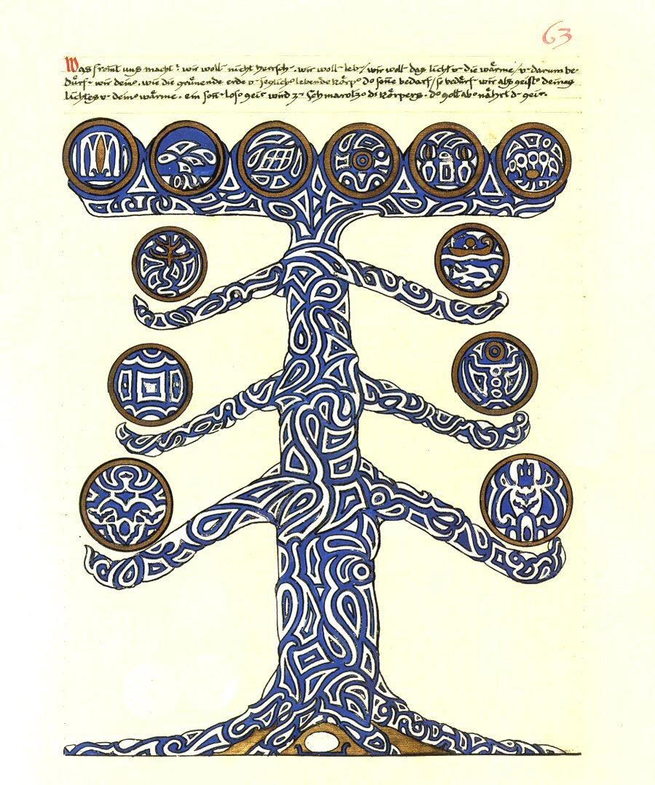
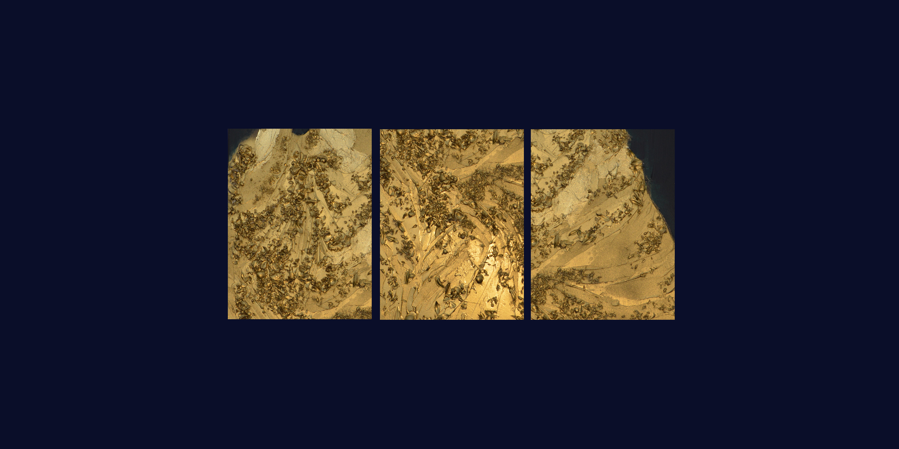

La forme n'est qu'un instantané pris sur une transition. - Henri Bergson
Saint Jean Baptiste // Daat

Il y a un être dans nous qui n'a d'autre objet que lui même. Il y en a un autre, qui tend, par toutes les forces qui sont en lui, vers quelque chose qui le dépasse. Et ces deux êtres ne sont pas seulement différents. Il y a entre eux un véritable antagonisme.
- Emile Durkeim, Le fait réligieux
- Emile Durkeim, Le fait réligieux
Natalia Stavrovskaja
printemps 2026
Saint Jean Baptiste
printemps 2026
Saint Jean Baptiste
2026

Natalia Stavrovskaja
Paris 2026
150 × 50 cm
Peinture Acrylique / Medium / Divers sur Toile
Paris 2026
150 × 50 cm
Peinture Acrylique / Medium / Divers sur Toile

Détail de texture
Saint Jean Baptiste // Daat
[U]ne société porte son art comme l’arbre ses fleurs, en raison de leur enracinement dans un monde que ni l’un ni l’autre ne prétend faire totalement sien.
- Anthropologie Structurale deux, C. L. Strauss